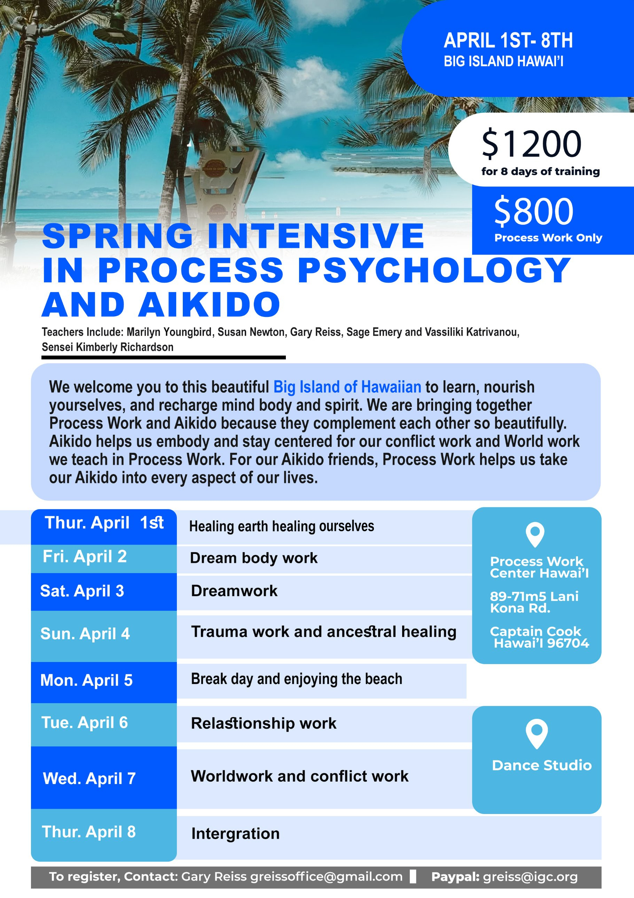

Intensive course.
This April, we will come together for our 2nd intensive course at Process Work Hawaii.
This year is incredibly special, with not only Process Work teachers like Gary Reiss, Susan Newton, Vassiliki Katrivanou, Sage Emery, and hopefully Emmanuel Baya, but also Native American elder and famous healer Marilyn Youngbird. Also joining us is Aikido teacher Kimberly Richardson, 7th dan.
We will integrate these powerful approaches to deepen our learning and our connection to our bodies and the Earth. We will take time to play, live together, eat together, and do ceremony together.
Come learn, heal, and grow with amazing teachers on this beautiful and powerful island. An intensive course is a great way to make a leap in your personal and professional development.
